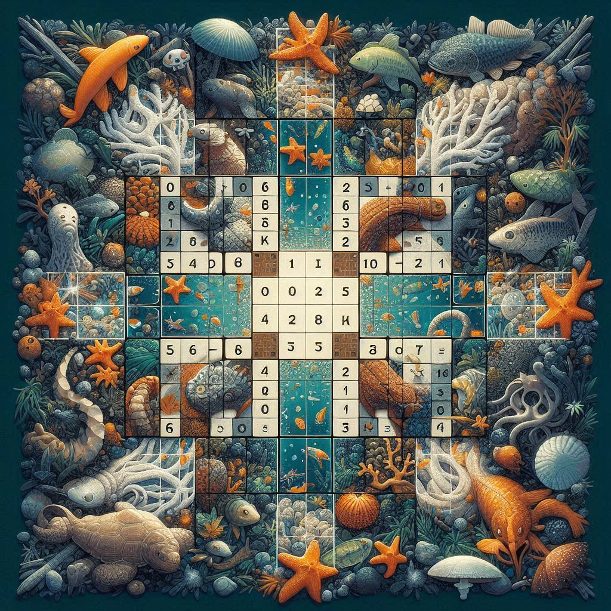

My Projects
Health Prediction System
Built an intuitive health prediction system using advanced machine learning techniques...
Python
Streamlit
ML
Online Library
A comprehensive web-based library management system with user-friendly interface...
HTML/CSS
JavaScript
PHP
SQL

OpenCV Sudoku Solver
A robust Sudoku solver application using OpenCV for image processing...
Python
OpenCV
NumPy

Sorting Visualizer
An interactive visualization tool for various sorting algorithms, helping users understand how different sorting methods work.
Python
HTML/CSS
JavaScript
Algorithms